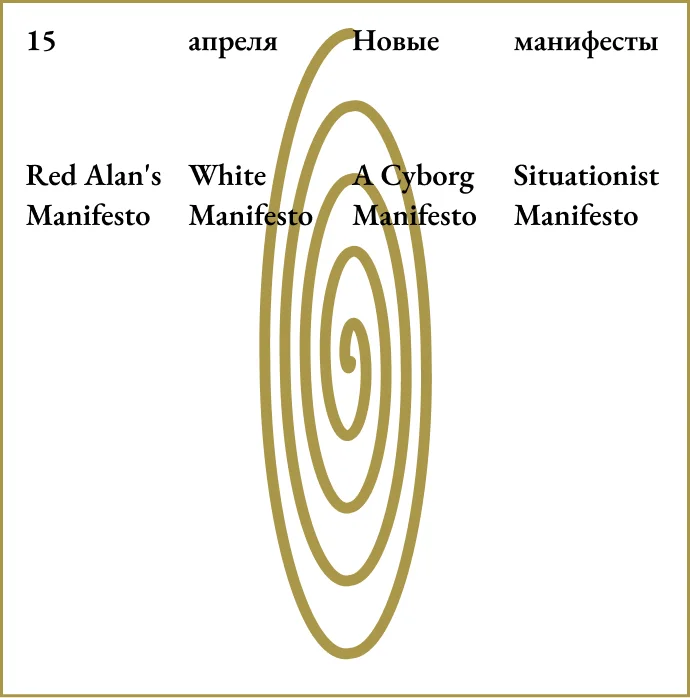
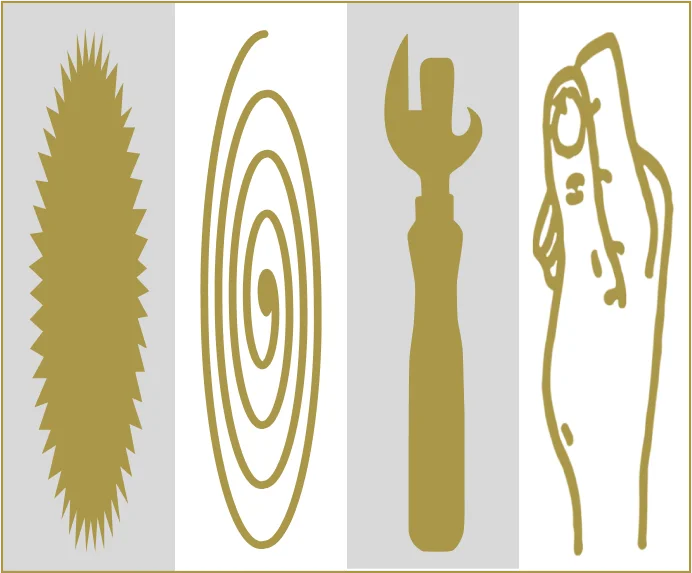
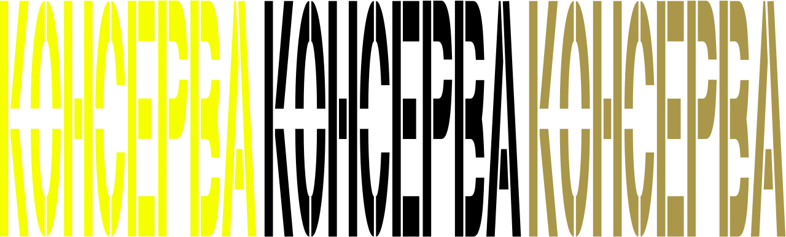
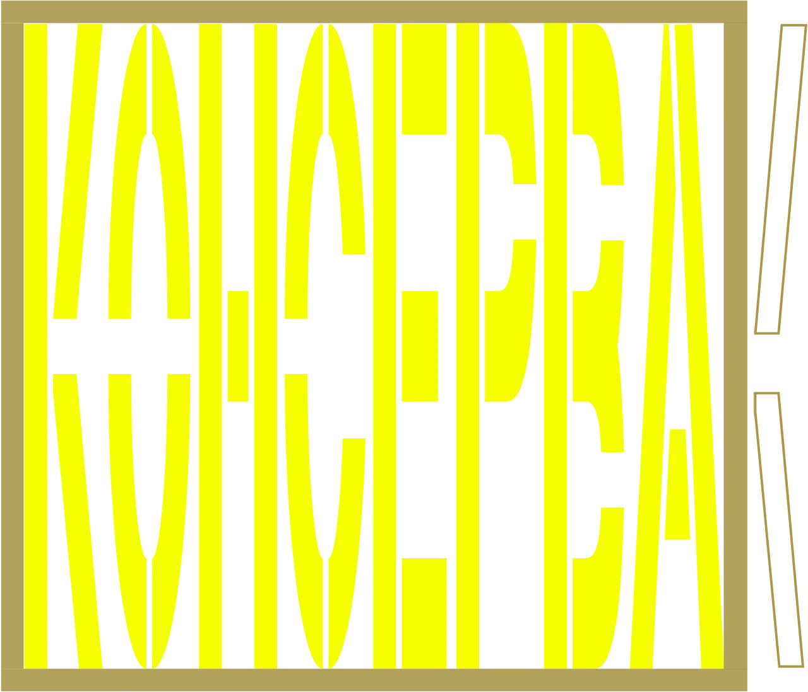
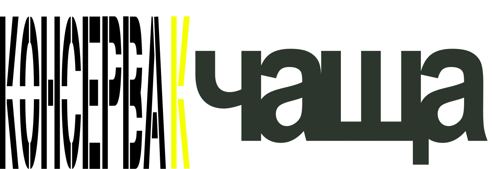

O проекте
Консерва — междисциплинарный архив текстов об искусстве. Мы стремимся развить культуру осознанного чтения и написания текстов.
Ценности
i. Отказ от потребительского отношения к текстам
ii. «Сплав» отраслей искусства
iii. Автономный подход к выбору манифестов
iv. Уважение к индивидуальной рефлексии читателя
Графическое руководство
Текст и графика проекта работают по простым правилам их сосуществования, которые описаны далее. i. Текст и графика полностью заполняют пространство, в котором находятся; ii. Находясь в одном пространстве, текст и графика контрастируют по направлению, но созвучны по наполнению и работают в два слоя;
Посты для социальных сетей, как пример правильного использования графики.
Неправильное использование
iii. Графика, представляющая собой изображения из внешних источников: a. Работает как второй слой, не зависит от направления текста и свободно заполняет пространство; b. Если не нуждается в тексте, то работает автономно и полностью заполняет пространство;
Посты для социальных сетей, как пример правильного использования графики.
Зачем растягивать графику?
Работая над графикой мы хотели, чтобы она работала по абсолютно простым и понятным правилам, но в то же время, хотелось сделать её адаптивной, а точнее даже сказать резиновой, для разных носителей, с которыми может соприкоснуться проект.
Не сложно заметить, что сайт построен по блочной системе, однако сетка в нём отсутствует, при этом соблюдаются определённые отступы и поля на каждой странице (не соблюдение этих ограничений вместе с отсутствием секи безусловно привело бы проект в хаос). Такая блочная система позволяет помещать иллюстрации, представляющие собой части консервной банки, идеально в эти блоки, что вновь поддерживает метафору некой вложенности, заполнения консервы и плотного существования всего, что в ней находится. Так, растягиваясь, графика приобретает универсальность в её использовании, а так же поддерживает общую атмосферу проекта.
Цветовая палитра:
i. #F6FF00
ii. #AA974A
iii. #FFFFFF
iv. #D9D9D9
v. #000000
Логотип
Никто из нашей команды никогда не сталкивался
с созданием логотипа, поэтому задача была безусловно сложной. Нам хотелось оставаться
в соответствующем культурном поле, которое создавали вокруг себя концептуальные тексты,
но при этом хотелось сделать что-то противоречивое и вызывающее, что-то, что ломало бы все шаблоны.
Для начала, мы разработали основные принципы работы текста и графики, которые описаны выше.
В основном, можно выделить контрастность
и противоречивость в правилах того, как сосуществуют эти элементы, но в этом как раз
и была заложена бунтарская, даже протестная сущность законов, по которым живёт консерва.
Для полной картины как раз не хватало логотипа, который будет жить по этим канонам, но при этом хотелось, чтобы он сам стал высказыванием, сам бунтовал против своих же создателей.
Тогда нам вспомнились Окна РОСТА и их массовые агитационные плакаты, создававшиеся с помощью трафарета. «Пятна красок и звон лозунгов» — вот что представляли собой эти плакаты, того же мы хотели и от консервы. От проекта должно было веять чем-то понятным, но понятным в рамках своего культурного поля: понятным не каждому прохожему, а тем, кто правда был заинтересован в манифестах. В какой-то момент дизайн и правда должен был отсекать всех незаинтересованных.
Цветовые вариации
Было решено взять именно трафаретных шрифт для логотипа проекта. Единственное, смущало
то, что в трафаретном шрифте присутствовал дух «левого» политического крыла, а нам совсем
не хотелось быть связанными вообще с какими-либо политическими ориентирами, однако это
уже было прописано в «культурном коде» этого шрифта, от которого уже никак не избавиться. Поэтому хотелось заранее уточнить, что мы не ставили целью через логотип высказывать какие-либо политические взгляды.
Стоит отметить, что трафаретный шрифт также был выбран благодаря «мостикам», которые как
бы открывают буквы для своего зрителя. Такая открытость созвучна с нашей идеей присутствия диалога между читателем манифеста и самим текстом. Важна была и материальная сущность самого трафарета, как того, что оставляет след, отпечаток действий человека. Здесь прослеживается и связь с самим словом логотип (λόγος — слово + τύπος — отпечаток). Логотип также провозглашает вызов стерильности веб-пространства. Так, шрифт, который чаще всего
мы можем увидеть на кузовах грузовиков и вывесок в мелких городах и посёлках, становится лицом проекта, кричит о том, что он идеален в своей
не идеальности, что он гениален в своей простоте.
«Охранное поле» логотипа
Коллаборация
Логотип всегда находится в вытянутом состоянии, однако вытянутость его ничем не обусловлена. Он, как живой организм, сам подстраивается под среду в которой находится, в чём и проявляется его адаптивность. Всё же, при использовании логотипа, следует помнить о наличии у него постоянного охранного поля, равному основному штриху, параметры которого меняются при растяжении. При расположении рядом с другими элементами, делается отступ шириной в одну букву (шрифт моноширинный).
Типографическое руководство
Мы хотели чтобы проект отсылал к газетам — медиуму, в котором впервые получили свое распространение творческие манифесты. Взяв
за основу типографику газет, было принято решение выбрать антикву EB Garamond.
Изначально шрифт создавался в переходный период, когда старомодные черные шрифты уступали место более современным римским.
Это похоже на то, как манифесты создаются
на стыке эпох, во временном промежутке главенства старых идей и рождения новых.
Garamond разрабатывался как разборчивая версия рукописного текста, написанная пером и тушью.
В этой идее шрифта кроется стремление консервы оживить традицию написания текстов, напомнить
о человеческом присутствии за каждой строкой.
При этом шрифт не лишен и бунтарского
и противоречивого духа. Существует стереотип
о том, что 500-летний французский шрифт придает каждому слову непрошенную тяжесть
и разговаривает с позиции глубокого интеллектуализма. Однако в мире неформального потока слов, где утилитарные шрифты без засечек ассоциируются с «Заметками» на телефоне,
нам кажется, что именно антиква подходит
для глубоких текстов и громких идей,
в них заложенных.
В сочетании EB Garamond и трафаретного шрифта мы видим конфронтацию не только между изысканностью первого и «уличной» утилитарностью второго, но и между
голосом автора и криком толпы.
Заголовок EB Garamond SemiBold 48px
Подзаголовок EB Garamond ExtraBold 30px
Основной текст EB Garamond SemiBold 30px